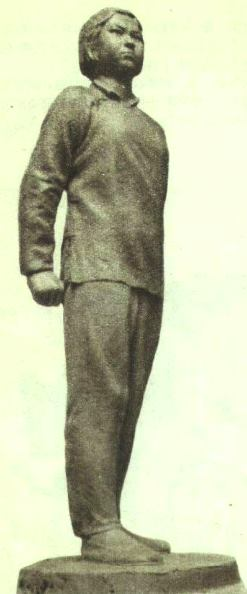
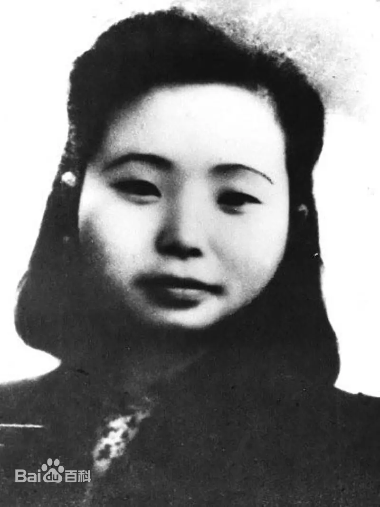
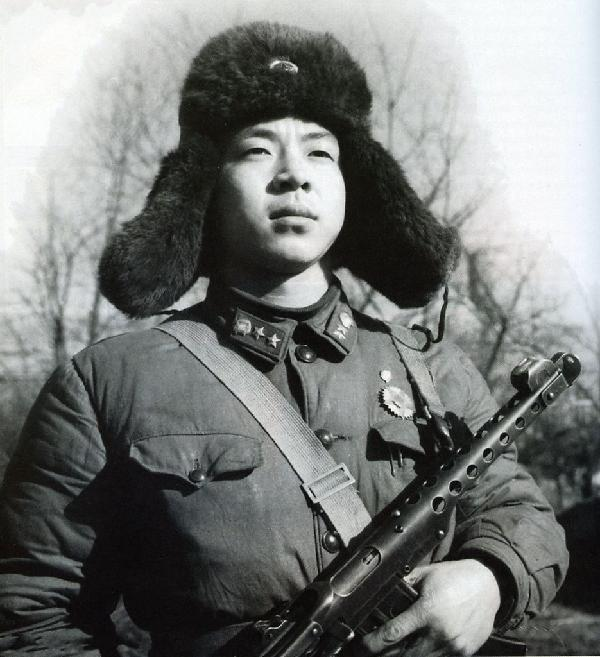

序 · PROLOGUE
一百零五年，
足够让一条铁链生锈，
也足够让一个名字被重新念起。
- 105
- 年 · 1921—2026
- 10
- 件大事
- 16
- 位人物
- 4
- 幕重现
- 5
- 个篇章
我们做的不是把历史再讲一遍，而是把它重新拼起来：从博物馆的展柜里，从县档案馆的卷宗里，从一位老人不太清楚的记忆里。
十个瞬间、十六张面孔、六段对话、四幕重现、若干部作品——它们不是五个栏目，而是同一段路的五种证据。点开任何一件，都能走回 1921 年。
目录 / CONTENTS
五种证据，一条来路
从任何一件开始，都能走回 1921 年。
卷一 / CHAPTER 01 · 1935
十三根铁链，
二十二个人
桥板被抽走，只剩十三根铁链横在大渡河上。二十二名突击队员攀着铁索，在枪声里一寸一寸往前爬。今天，几节链环安静地躺在展柜里，锈迹比任何形容词都具体。
读这十件事档案编号 / HJ-1935-05
数字化 / 2026 · 项目组
十个瞬间
1921 — 1950 / TEN MOMENTS卷二 / CHAPTER 02 · 人
他们中的许多人，
停在二十七岁。
十六张面孔里，有写下《青春》的教授，有十五岁的农村姑娘，有牺牲时口袋里还装着半块干粮的战士。照片大多模糊，但眼睛都很亮。



“未惜头颅新故国，甘将热血沃中华。”赵一曼《滨江述怀》 · 1936
卷三 · 话
试看将来的环球，李大钊 · 1918
必是赤旗的世界！
1918 年，他在《新青年》写下这句话。一百多年后，这句话变成了一个问题，留给你。
如果还能问一句……
开口 →
李大钊周恩来方志敏江竹筠董存瑞雷锋
卷五 / CHAPTER 05 · 作
文字比人活得久
有些话写在囚室的墙上，有些写在油印小报的边角。它们后来成了书，成了歌，成了我们今天的日常。
书脊按出版年份排列 / FIRST EDITIONS
打开红色经典 →